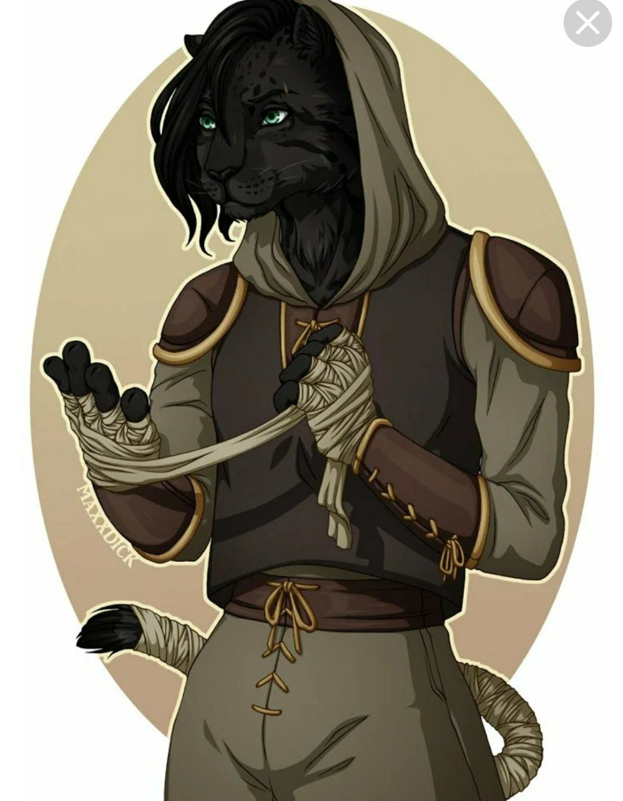

| Имя | Табаско |
|---|---|
| Пол | м |
| Возраст | Возраст считать не принято. После 100-200 лет это всем надоедает, а возрастом хвастаются в основном «малолетки». |
| Раса | Табакси |
| Класс | Плут | Описание | Я совсем не дикий, как некоторые мои собратья. Я родом из тех табакси, которые уже много столетий были компаньономи и друзьями людей, поэтому повадки у меня не дикарьские. Мои более примитивные собраться называют нас "домашними", но за это крепко получают - когти без дела не оставляю за такую дерзость! Клянусь хвостом, будет атакован каждый, кто так будет меня называть! Я вам не 🐈 Я хожу на двух лапах, как человек, ловкость рук у меня человеческая. Имею ночное зрение, острый слух. У меня взгляд кошки, грация...тоже кошки. Но все зависит от непредсказуемого настроения! Я очень переменчив, темпераментен. В бою использую только когти и зубы, лапы. Поэтому меня на моей родине прозвали Ледяной Табаско. Живу по кошачьим фазам. Одна фаза ледяная - ловкость картофеля, ледяной взгляд, незаинтерсованность происходящим, лень. Острая, перчёная фаза - неутомим, вспыльчив, инициативен, и ловкость уже совсем не картошки!
|
| Фото |
 Вот я. Только без чёлки. И я пепельно-серый! |